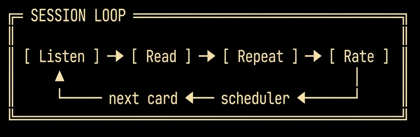
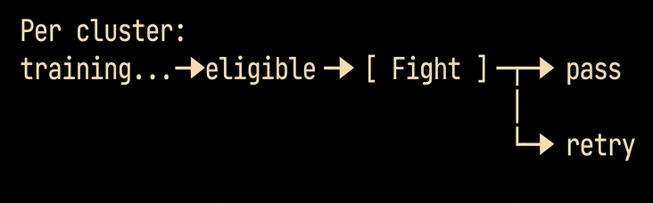
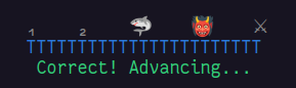

نظرة عامة
إن FlashBoss تطبيق طرفية لسطح المكتب لاكتساب المفردات. يجمع بين مجدول للتكرار المتباعد، وجمل أمثلة مصوغة مع تحويل النص إلى كلام، وعناقيد محتوى موضوعية، وآلية تخرج عبر معارك الزعماء. والنظام مصمم لتنمية المهارات الاستقبالية — القراءة والاستماع والفهم — في اللغة المستهدفة.
تحتوي حزمة Core واحدة على 1,000 بطاقة، وتقدم أكثر من 5,000 كلمة من مدخلات اللغة المستهدفة في سياقها. وتضيف كل حزمة توسعة من حزم Pareto أكثر من 10,000 كلمة، مبنية حول أعلى المفردات تواترا مما لم يغط بعد. واللغات المدعومة هي الإنجليزية والألمانية والإسبانية والإيطالية والفرنسية واللاتينية والسواحيلية والإسبرانتو وToki Pona.
بنية المحتوى
يصف هذا القسم البنية الداخلية المشتركة بين حزم FlashBoss. أما التنظيم على مستوى الحزم — كيف تتكامل الحزم، وكيف تختلف حزم اللغات الأجنبية عن حزم الإنجليزية — فموثق في القسم 4.
البطاقة
تحمل كل بطاقة ما يصل إلى خمسة حقول نصية ومقطعين صوتيين. ولا ينطق إلا حقلا اللغة المستهدفة:
| الحقل | المحتوى | TTS |
|---|---|---|
TargetWord | المفردة قيد التدريب. وفي اللغات التي تميز الجنس النحوي تحمل أداة تعريفها، ملونة بحسب الجنس. | نعم |
Translation | معنى الكلمة المستهدفة بلغة المتعلم الأم. | لا |
ExampleSentence | جملة مصوغة تضع الكلمة المستهدفة في سياقها، ولا تستخدم إلا مفردات سبق أن قدمها المجدول. | نعم |
ExampleTranslation | صياغة اصطلاحية لجملة المثال بلغة المتعلم الأم. | لا |
Notes | أصل الكلمة، أو ملاحظة نحوية، أو مثال ثان مشروح، أو مجموعة مرادفات. اختيارية. | لا |
لا يطبق تحويل النص إلى كلام إلا على حقول اللغة المستهدفة. وهذا التفاوت مقصود: الغاية إغراق المتعلم في أصوات اللغة المستهدفة، مع إبقاء سقالات اللغة الأم صامتة لا تزاحم.
العنقود
العنقود مجموعة بطاقات ذات موضوع واحد — وهو وحدة التقدم في FlashBoss. تقدم بطاقات العنقود معا، وتدرب معا، وتتخرج معا عبر معركة زعيم واحدة. وموضوعات العناقيد ملموسة وضيقة: الأعداد والوقت، والسفر والإقامة، والمطبخ المحلي، والأدوار الاجتماعية والناس.
المرحلة
تقع العناقيد داخل المراحل. تضم حزمة Core خمس مراحل، في كل منها عادة نحو ثمانية عناقيد. وفي حزم اللغات الأجنبية تكون المرحلة بوابة صعوبة: فهي تحدد التراكيب النحوية المسموح بظهورها في جمل أمثلة العنقود. تقتصر جمل أمثلة المرحلة 3 على المضارع والأمر والماضي البسيط؛ وتضيف المرحلة 4 الماضي الاستمراري والشرط؛ وتفتح المرحلة 5 القواعد كاملة بما فيها صيغة الالتزام (subjunctive). أما في حزم الإنجليزية فيستخدم نظام المراحل موضوعيا لا نحويا — إذ تعكس المرحلة مجالا موضوعيا (مثل الاستمارات والوثائق، والتواصل الاجتماعي والبريد الإلكتروني، والكلمات الملتبسة) لا درجة التعقيد النحوي.
الدرس
الدروس صفحات مرجعية مثبتة على بطاقات بعينها — مادة نقاط مراجعة ترافق البطاقة طوال تدريبها. فحين تظهر بطاقة مرفق بها درس أول مرة، يظهر الدرس معها. وكلما عادت البطاقة وفق جدول التكرار المتباعد، عاد الدرس معها. فالدروس إذن مرجع دائم، لا عرض لمرة واحدة. ومن استوعب محتوى درس ما يمكنه تعطيله وحده: فتواصل البطاقة تدريبها، ويتوقف الدرس عن الظهور.
المعلمون
قبل بدء التدريب يختار المتعلم معلما — المرشد الذي يحدد الإيقاع اليومي. ويثبت المعلم نصاب السلسلة: عدد البطاقات المستحقة كل يوم لإبقاء السلسلة حية، من 8 إلى 34 بطاقة، أي نحو 5 إلى 30 دقيقة من الدراسة.
| المعلم | الطبع | بطاقات / يوم |
|---|---|---|
| 🐺 Luna — لطف وتشجيع | حازم | 8 |
| ⚫ Claude — تحليل ودقة | استشاري | 13 |
| 🐉 Shen — صرامة ومباشرة | حازم | 13 |
| 🦉 Odiin — تشجيع وطيبة | استشاري | 21 |
| 🦊 Kitsune — مكر ومرح | استشاري | 34 |
| 🦅 Aquila — نبل وانضباط | حازم | 34 |
مدى صرامة المعلم يرجع إلى ذلك العدد اليومي. وOdiin، بإحدى وعشرين بطاقة، هو أكثر المعلمين صرامة مما يوصى به للمتعلم الجديد — الطريق الأعلى. ويقع وراءه المعلمان صاحبا الأربع والثلاثين بطاقة، Kitsune وAquila: إيقاع لجولات الاستذكار ولمن يريد الحد الأقصى.
أما طبع المعلم فأمر منفصل، ويتحكم في شيء واحد — كتاب التعاويذ. فالمعلم الحازم يحد من جلسات كتاب التعاويذ، احترازا من التقدم أبعد مما ينبغي ثم الإنهاك. والمعلم الاستشاري ينبه إلى أن جلسة أخرى ليست حكيمة، ثم يتنحى ويتركها تحدث. وفيما عدا ذلك فالطبعان متطابقان.
والتوزيع غير متساو. فإيقاعا الثلاث عشرة والأربع والثلاثين بطاقة متاحان بالطبعين كليهما — Claude (استشاري) أو Shen (حازم) عند ثلاث عشرة، وKitsune (استشاري) أو Aquila (حازم) عند أربع وثلاثين — فهناك يختار الإيقاع والأسلوب كل على حدة. أما إيقاع الثماني بطاقات فلLuna وحدها (حازم)، وإيقاع الإحدى والعشرين لOdiin وحده (استشاري).
كم يستغرق الأمر
الإيقاع هو كل شيء. تمتد المجموعة ذات الـ 1,000 بطاقة على خمس مراحل، فمتوسط المرحلة 200 بطاقة — وتزيد المراحل أو تنقص عن ذلك — والدورة الكاملة ثلاث مجموعات. مع أداء النصاب اليومي لا أكثر:
| الإيقاع | المعلمون | مرحلة | مجموعة من 1,000 كلمة | دورة من 3,000 كلمة |
|---|---|---|---|---|
| 8 / يوم | Luna | ~10 أسابيع | ~1 سنة | ~3 سنوات |
| 13 / يوم | Claude · Shen | ~6 أسابيع | ~8 أشهر | ~2 سنة |
| 21 / يوم | Odiin | ~4 أسابيع | ~5–6 أشهر | ~1½ سنة |
| 34 / يوم | Kitsune · Aquila | ~2–3 أسابيع | ~3 أشهر | ~1 سنة |
تقديرات مقربة، وهي حد أدنى لا توقع: فنصاب السلسلة هو أقل ما يستحق كل يوم لا سقفه، وكتاب التعاويذ موجود لمن يريد الإسراع. ولا تمتد كل الدورات إلى ثلاث مجموعات — فجذع اللاتينية مجموعتان، وToki Pona حزمة واحدة من 500 بطاقة.
بنية الحزم
الحزمة هي وحدة التوزيع في FlashBoss: مجموعة مفردات قائمة بذاتها — عادة 1,000 بطاقة — لها بنية عناقيدها وبنية مراحلها ومكتبة دروسها. وتصدر الحزم وفق نموذجين مختلفين بحسب اللغة.
حزم اللغات الأجنبية: تدرج تراكمي من ثلاث حزم
تصدر كل من الإنجليزية والألمانية والفرنسية والإسبانية والإيطالية والإسبرانتو سلسلة من ثلاث حزم: Core وPareto 1 وPareto 2. والتدرج تراكمي — فكل حزمة تفترض المفردات التي قدمتها الحزم السابقة وتبني فوقها جمل أمثلة جديدة. تستمد جمل أمثلة Pareto 1 من مفردات Core إضافة إلى الكلمات المستهدفة الجديدة في Pareto 1؛ وتفترض Pareto 2 الحزمتين السابقتين معا. ومن يتم الثلاث يبلغ حصيلة استقبالية من 3,000 بطاقة في اللغة المستهدفة.
ترقيم المراحل متصل عبر السلسلة. تغطي Core المراحل 1–5. وتمد Pareto 1 وPareto 2 معا السلسلة بعشر مراحل أخرى: المرحلة 6 أولى مراحل Pareto، والمرحلة 15 آخرها.
أهداف CEFR لكل حزمة:
| الحزمة | البطاقات | الهدف |
|---|---|---|
Core | 1,000 | التعرض لقواعد A1–A2؛ يهيئ المتعلم لدروس الانغماس في المستوى A2. |
Pareto 1 | 1,000 | مفردات B1–B2 عالية التواتر؛ تمتد إلى سجلات لغوية غائبة عن Core (السفر، والمعاملات الرسمية، والحياة الاجتماعية). |
Pareto 2 | 1,000 | مفردات B2–C1؛ أدوات الربط الرسمية، والسجلات المجردة، والمحتوى الثقافي. |
حزم الإنجليزية: حزم مستقلة قائمة بذاتها
تصدر الإنجليزية بطريقة مختلفة. فكل حزمة إنجليزية مجموعة مفردات مكتفية بذاتها من 1,000 كلمة، ويختار المتعلمون الحزم بحسب المستوى والاهتمام لا بإتمامها بالترتيب. ولا يوجد تدرج تراكمي — فإتمام حزمة إنجليزية لا يفترض حزمة أخرى. وتنقسم حزم الإنجليزية إلى عائلتين بنيويتين:
- حزم المستويات — مفردات ترفع القارئ مستوى وتثبته فيه. English Adept، الحزمة المجانية المحورية، تمتد على أطول صعود: تبدأ من دون مستوى القراءة في الصف الثامن وتحمل المتعلم حتى الجاهزية الجامعية، فتنتهي عند نحو C1. أما English Advance فتستهدف الإنجليزية العملية اللازمة للعيش في المجتمع دون قيود: الاستمارات والرسائل والمعاملات الرسمية والوثائق اليومية التي تتطلبها حياة البالغين. والمبدأ الموجه: إنجاز الأمر مرة واحدة، كما ينبغي، ثم لا حاجة إلى التفكير فيه مرة أخرى.
- سلسلة Roots — حزم مدفوعة تدرب على مفردات الإنجليزية عبر طبقاتها الاشتقاقية الثلاث: German Roots (الأنجلوسكسونية)، وNorman Roots (الفرنسية النورماندية)، وLatin Roots (العلمية). وتكشف الإحالات المتبادلة بين الثلاث عن الأزواج التاريخية التي تمنح الإنجليزية نظام سجلاتها.
بنية الجلسة والجدولة
تمر جلسة التدريب بكل بطاقة عبر خمس مراحل فرعية. الأربع الأولى لكل بطاقة؛ والخامسة لكل عنقود.


الاستماع
يشغل صوت Piper لتحويل النص إلى كلام الكلمة المستهدفة لحظة ظهورها على الشاشة. وحين يستعد المتعلم، تعرض ضغطة مفتاح جملة المثال وتنطقها. هذا هو التعرض الأول.
القراءة
في كل خطوة، تثبت قراءة المادة المنطوقة بصوت عال الذاكرة، وتحسن نطق المتعلم وثقته في الكلام. ثم يتسع الوقت لتحليل الجملة، ومقابلتها بالترجمة، واستيعاب القواعد في سياقها.
التكرار
عند عرض الترجمة الإنجليزية تتاح أدوات الإعادة: Enter يعيد الكلمة المستهدفة، و6 يعيد جملة المثال. ودورات التكرار غير محدودة في هذه المرحلة؛ ويتقدم المتعلم حين يستعد.
التقييم
يقيم المتعلم مدى تعرفه على مقياس من ست درجات (من 0 إلى 5). ويغير التقييم موضع البطاقة في متتالية فترات فيبوناتشي (1، 2، 3، 5، 8، 13، 21… يوما)، مع حد أدنى للفترة خاص بكل تقييم. والتقييم 0 حالة خاصة — عودة إلى 1 يوم أيا كان موضع البطاقة السابق.
| التقييم | المعنى | تغير الفترة |
|---|---|---|
0 | نسيان تام. | العودة إلى 1 يوم. |
1 | ضعيف جدا. | الموضع −3 (الحد الأدنى 1 يوم). |
2 | ضعيف. | الموضع −2 (الحد الأدنى 2 يوم). |
3 | مقبول. | الموضع −1 (الحد الأدنى 3 أيام). |
4 | جيد. | دون تغيير (الحد الأدنى 5 أيام). |
5 | ممتاز. | الموضع +1 (الحد الأدنى 8 أيام). |
المقياس معاير بحيث يتطلب التقدم تقييما صارما. لا يقدم البطاقة إلا التقييم 5؛ والتقييم 4 يبقيها في موضعها؛ ومن 1 إلى 3 يرجعها خطوات في جدول فيبوناتشي؛ و0 يعيدها إلى 1 يوم. وتمنع الحدود الدنيا الخاصة بكل تقييم انهيار فترة البطاقة بسبب تقييم سيئ، وهي أساس قاعدة الإتقان.
إتقان البطاقة
تصبح البطاقة متقنة بتقييمين متتاليين بالدرجة 5. والآلية مباشرة: تقييم 5 واحد يرفع الحد الأدنى لفترة البطاقة إلى 8 أيام؛ وتقييم 5 ثان يقدمها إلى 13 يوما — عتبة الإتقان. فمن أي موضع بدأت، يحمل استرجاعان تامان متتاليان البطاقة إلى الإتقان.
الجلسات اليومية
تسحب البطاقات الجديدة إلى المجموعة واحدة تلو الأخرى بترتيب العناقيد؛ ولا تقيد حدود العناقيد إدخال البطاقات. ويتبع حجم البطاقات اليومي نسبة فيبوناتشي — ففي جلسة يوم ما تسحب بطاقات المراجعة والبطاقات الجديدة بنسبة أعداد فيبوناتشي متتالية، فيقترب المزيج من φ، النسبة الذهبية.
جاهزية معركة الزعيم؟
يصبح العنقود مؤهلا لمعركة زعيمه حين يتقن 80% من بطاقاته — أي حين يبلغ 80% منها فترة الـ 13 يوما. ولا يلزم إتقان كل بطاقة لخوض المعركة: لكن الفوز يتطلب هزيمة أصعب بطاقتين على التوالي. وتناقش آليات المعركة بالتفصيل في القسم التالي.
معركة الزعيم
معركة الزعيم هي آلية تخرج العنقود، والطريق الوحيد لخروجه من التدريب النشط. وعلى خلاف مرحلة التقييم — التي يقيم فيها المتعلم نفسه — فمعركة الزعيم مواجهة، واختيار من متعدد حصرا. يتقاسم المتعلم والزعيم ساحة خطية واحدة؛ يبدأ المتعلم من اليسار، ويقف الزعيم أبعد إلى اليمين. والمهمة دفع الزعيم عن الطرف البعيد. قواعد السومو: لا يبقى على المنصة إلا واحد.
يعرض كل دور إحدى بطاقات العنقود سؤالا، مع ثماني إجابات محتملة على مفاتيح الأرقام 1–8. الإجابة الصحيحة تقدم المتعلم موضعا واحدا على المسار، ويدفع الزعيم في الوقت نفسه موضعا أقرب إلى الحافة البعيدة. والإجابة الخاطئة تزلق المتعلم موضعين إلى الوراء نحو الحافة القريبة، أو خارجها. ومن يدفع عن الحافة القريبة يمنع من معركة ذلك العنقود حتى اليوم التالي. أما الزعيم فإذا دفع وراء الحافة البعيدة هزم، وقهر العنقود.

الساحة: مسار أفقي واحد يتقاسمه المتعلم (يسارا) والزعيم (يمينا)، مع علامة عند الحافة البعيدة — مخرج الزعيم. الإجابة الصحيحة تقدم المتعلم موضعا وتدفع الزعيم موضعا أقرب إلى تلك الحافة؛ والإجابة الخاطئة تزلق المتعلم موضعين إلى الوراء. يسحب الموضعان 1–2 أسهل بطاقات العنقود، والموضعان 3–4 أصعبها. السقوط عن الحافة القريبة يقفل العنقود حتى اليوم التالي؛ ودفع الزعيم وراء الحافة البعيدة يقهر العنقود.
النقر للقتالترتيب البطاقات داخل المعركة مقصود. يسحب الموضعان 1 و2 من أسهل بطاقات العنقود — إحماء يتيح للمتعلم بناء تقدم في الموضع. ويسحب الموضعان 3 و4 من أصعبها: أضعف الكلمات في المجموعة، تأتي ما إن يبدأ المتعلم في كسب الأرض. والإجابة الخاطئة في الموضع 3 أو 4 تزلق المتعلم موضعين إلى الوراء — إلى الموضع 1 أو 2 — ويعاد تصنيف البطاقة الفائتة على أنها الأسهل لديه منذ تلك اللحظة. وللأسف يعني ذلك أنها بانتظاره: البطاقة نفسها، قابعة الآن في الخانات السهلة حيث هبط للتو. فلا يقهر عنقود قبل إتقان أضعف بطاقاته.
مبررات التصميم موثقة في القسم 7. وباختصار: تضخ معركة الزعيم ضغطا محدودا قليل العواقب، يولد ضغط استرجاع حقيقيا دون عواقب الإخفاق اللغوي في العالم الحقيقي. كما توفر حالة نجاح محددة — قهر العنقود — يفتقر إليها الإيقاع المفتوح للتكرار المتباعد.
التصميم التربوي
تعكس بنية FlashBoss نتائج راسخة في اكتساب اللغة الثانية وعلم النفس المعرفي. وهذه الأسس ذات الصلة:
المدخلات المفهومة
تقول فرضية المدخلات لدى Krashen [1] إن المتعلمين يكتسبون اللغة على أفضل وجه حين تكون المدخلات فوق كفاءتهم الحالية بقليل — مفهومة بما يكفي لتحليلها، ومتطلبة بما يكفي لتوسيعها. وجمل الأمثلة في FlashBoss مصوغة بحيث تكون الكلمة المستهدفة عادة العنصر المجهول الوحيد؛ أما بقية الجملة فمن مفردات سبق أن قدمها المجدول. وهذا يضبط درجة الفهم عند نحو 80–95% للمتعلم المتدرب، فيضع كل جملة في منطقة i+1.
ممارسة الاسترجاع
ينتج الاستدعاء النشط احتفاظا أقوى على المدى الطويل من إعادة القراءة [2]. وتفرض مرحلة التقييم الاسترجاع قبل كشف الترجمة، فتطبق أثر الاختبار على كل عرض للبطاقة. فالبطاقات لا تعرض عرضا سلبيا؛ بل تستدعى استدعاء نشطا ويقيمها المتعلم بنفسه.
التكرار المتباعد
تتلاشى الذاكرة على منحنى يمكن توقعه [3]. ومراجعة البطاقة قبيل نسيانها تثبت أثر الذاكرة بكفاءة أعلى من التكرار المكثف. ومتتالية فترات فيبوناتشي واحدة من عدة جداول تقارب منحنى النسيان؛ وتستخدم هنا لبساطتها وثباتها وتدرجها البديهي للمتعلم.
الصعوبة المرغوبة
يستفيد الاحتفاظ من الجهد لحظة الترميز والاسترجاع [4]. ويجسد مقياس التقييم الصعوبة المرغوبة بجعل التراجع هو الأصل: فالتقييمات دون 5 إما تبقي البطاقة في موضعها وإما ترجعها في جدول فيبوناتشي. ولا يكسب التقدم إلا استدعاء لا لبس فيه، ويتطلب الإتقان استدعاءين كهذين متتاليين. وحتى يكتمل جزء كبير من العنقود تبقى بطاقاته كلها متداولة، لكن الكلمات المعروفة جيدا لا تنافس على الانتباه مادة أجدر به.
الإطار الوجداني
القلق الشديد يضعف الاكتساب [1]. ومعركة الزعيم مصممة لإدخال الضغط دون رفع المرشح الوجداني: فالعواقب محدودة (المعركة الخاسرة تكلف يوما، لا مكانة في محادثة)، والنظام خاص، ولا يوجد سجل دائم. والضغط مصمم ليكون حادا بما يكفي لتركيز الاسترجاع، وخفيفا بما يكفي للحفاظ على الظروف التي يتطلبها الاكتساب.
المدخلات قبل المخرجات
تنمو المهارات الاستقبالية أسرع من المهارات الإنتاجية حين تدرب وحدها. وإغراق المتعلم في مدخلات عالية الفهم قبل مطالبته بالإنتاج يحاكي طريقة اكتساب الأطفال للغتهم الأولى، ويتيح للمفردات والقواعد أن تصبح قابلة للتحليل قبل أن تصبح قابلة للاستخدام. وFlashBoss هو نصف المدخلات في مسار تعلم متكامل؛ أما الممارسة الإنتاجية — الكلام والكتابة والتفاعل — فمسؤولية أدوات لا يحاول FlashBoss أن يحل محلها.
النطاق
يدرب FlashBoss على:
- مفردات اللغة المستهدفة والتعرف عليها.
- فهم المقروء على مستوى الجملة.
- فهم المسموع عبر تحويل النص إلى كلام.
- اكتساب القواعد عرضا عبر التعرض لها في سياقها.
- طلاقة القراءة على مستوى العبارة.
ولا يدرب FlashBoss على:
- إنتاج الكتابة.
- طلاقة المحادثة.
- استراتيجيات إصلاح التواصل.
أقوى طريق لتعلم التحدث بلغة جديدة واستخدامها هو صف انغماس في المحادثة — صحبة أقران يسعون إلى الهدف نفسه، مع معلم متمكن يرشد الطريق. وحيث تجعل الجغرافيا ذلك بعيد المنال، تؤدي خدمات التدريس عبر الإنترنت وصفوف المحادثة العمل نفسه؛ وحيث تكون الكلفة هي العائق، يمكن حتى لروبوت محادثة أن يحل محلها — مكانا لممارسة الكلام، ولطرح الأسئلة التي تنشأ أثناء جلسة FlashBoss.
استخدام FlashBoss بفعالية
التحكم في عبء الدراسة
يمكن التحكم في عبء الدراسة اليومي بثلاث طرق رئيسية: اختيار المعلم؛ وتجاوز نصاب السلسلة لنيل جائزة اليوم الملحمي (EPIC) اليومية (موصى به)؛ وثالثا، عقد — فبعد نيل اليوم الملحمي يمكن اختيار دراسة يوم إضافي مقابل رمز دافع. لكن الحذر واجب عند العبث بالسحر.
المعلم (السلسلة اليومية). يحدد المعلم المختار النصاب اليومي — من 8 إلى 34 بطاقة في اليوم (تفاصيل المعلمين في القسم 3). وأداء الحد الأدنى وحده يحفظ السلسلة دائما ويبقي التقدم مستمرا، مع إمكانية فعل المزيد.
اليوم الملحمي. في اليوم الأول من المرحلة — يوم حجر الأساس — تقدم الجلسة الملحمية ما يصل إلى ثلاثة أضعاف النصاب اليومي من البطاقات الجديدة. وهذه هي البداية المثلى: فهي تدخل إلى الدوران مفردات تكفي ليؤدي التكرار المتباعد عمله. ويرتفع عدد البطاقات المتاحة وينخفض من يوم لآخر.
كتاب التعاويذ (العقد). تجلب جلسة كتاب التعاويذ اليوم التالي إلى الحاضر — مراجعات الغد وحصة أخرى من البطاقات الجديدة، تنجز اليوم. إنها حرفيا عمل الغد منجزا الآن، وإتمامها يكسب رمز دافع: يوم راحة مدخر لوقت الحاجة.
القراءة بصوت عال
نطق كل سؤال بصوت عال أثناء تشغيله. فإنتاج الكلمات يفعل أكثر من تمرين النطق: تكوين الجملة في الفم يستنفر الذاكرة الحركية والسمعية إلى جانب البصرية، فترمز كل بطاقة عبر عدة قنوات في آن — أثر أغنى وأدوم مما تتركه القراءة الصامتة. وتوليد اللغة لا مجرد التعرف عليها هو في ذاته فعل استرجاع، وهذا ما يرسخ الذاكرة؛ أما الثقة في الكلام التي يبنيها فمكسب إضافي يتراكم.
المعارك الخاسرة
خسارة معركة زعيم انتكاسة صغيرة. تعرض شاشة الهزيمة الكلمات التي جاءت إجاباتها خاطئة، مع إمكانية الضغط على 8 للتبديل بين اللغة المستهدفة والإنجليزية. والبطاقة الفائتة في المواضع الصعبة (3–4) يعاد تصنيفها على أنها الأسهل منذ تلك اللحظة، فتعود في المواضع الأولى من المحاولة التالية. ولا يقهر العنقود قبل الإجابة عن تلك البطاقة إجابة صحيحة — فالكلمة التي كانت سبب الهزيمة تصبح بوابة لا بد من عبورها قبل أن تنتهي المعركة. وقد تتطلب العناقيد عدة محاولات، لكن الغد موجود دائما.
المسار المتوقع
المتعلم المواظب يتم Core في شهرين إلى ستة أشهر. ويصنع FlashBoss وهم معرفة أكثر مما هو حاصل، لأنه يبقي المتعلم في فقاعة من لغة يعرفها، تتسع بطريقة مضبوطة. ستبقى فجوات كبيرة في الفهم، لكن مع المواصلة تنغلق تلك الفجوات. وفي أثناء ذلك يزداد الفهم كل يوم. نتمنى لكم رحلة لغوية موفقة — المعلمان Odiin وClaude.
المراجع
- Krashen, S. D. (1982). Principles and Practice in Second Language Acquisition. Pergamon. (فرضية المدخلات؛ المرشح الوجداني.)
- Roediger, H. L., & Karpicke, J. D. (2006). Test-enhanced learning: taking memory tests improves long-term retention. Psychological Science, 17(3), 249–255.
- Ebbinghaus, H. (1885). Über das Gedächtnis. Duncker & Humblot. (منحنى النسيان، سلف التكرار المتباعد؛ قارن Leitner، 1972.)
- Bjork, R. A. (1994). Memory and metamemory considerations in the training of human beings. In Metacognition: Knowing about Knowing. MIT Press. (الصعوبة المرغوبة.)